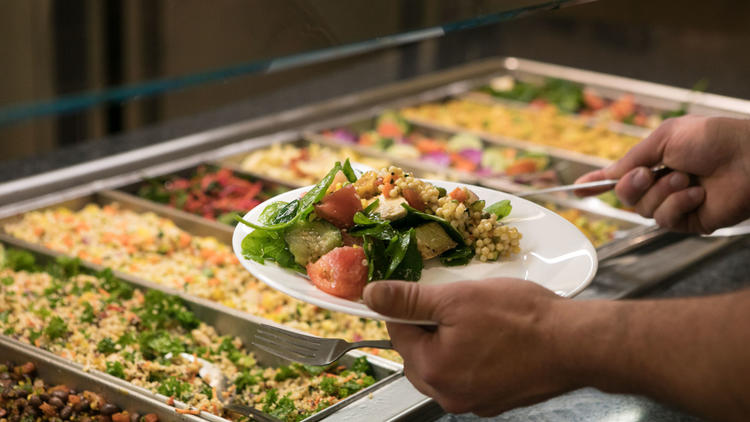
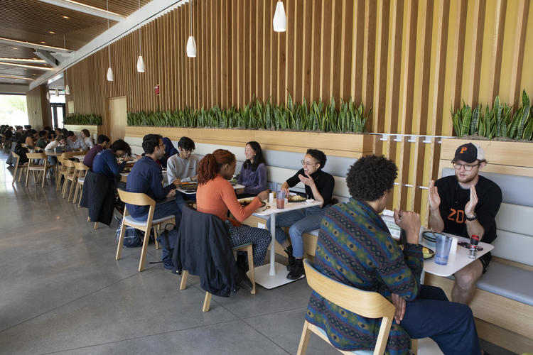

-
Nassau Street Dining: Nassau Street, located along the edge of Princeton University’s campus, offers a variety of popular dining options.
- PJ’s Pancake House – A local favorite for hearty breakfast dishes, particularly pancakes, served in a cozy atmosphere.
- Hoagie Haven – Famous for its generously stacked sandwiches, perfect for a quick, casual meal.
- Olives Deli and Bakery – Mediterranean-inspired salads, sandwiches, and baked goods ideal for lunch on the go.
-
Palmer Square and Hulfish Street Dining: For those seeking a more upscale experience, Palmer Square and Hulfish Street offer refined dining options.
- Mediterra – A sophisticated restaurant featuring Mediterranean cuisine with an emphasis on fresh seafood and tapas.
- Teresa Caffe – An Italian eatery offering handmade pasta, thin-crust pizza, and seasonal dishes in a cozy atmosphere.
- Mistral – Known for its inventive small plates and farm-to-table freshness, offering globally inspired dishes in an upscale setting.
-
Cafes and Sweet Treats: Princeton also boasts several cafes and dessert shops perfect for a quick coffee or sweet indulgence.
- Small World Coffee – A favorite among students for its expertly brewed coffee, creative lattes, and welcoming study-friendly vibe.
- The Bent Spoon – An artisanal ice cream shop famous for unique flavors like lavender mascarpone and honey-ginger, perfect for a sweet treat.
